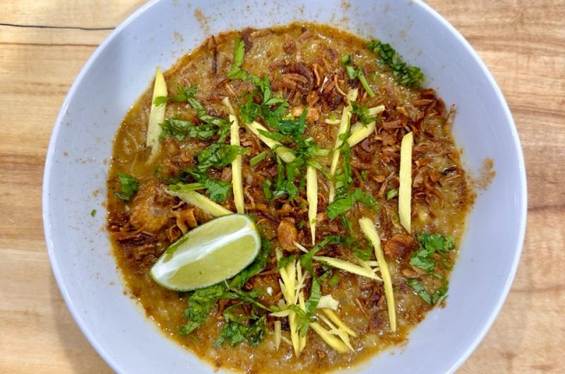

Karachi Deighi Haleem

Description
Haleem is a savory porridge-like dish, combining lentils, grains, and meat with a medley of aromatic spices, offering a rich and comforting culinary experience. It has a history as rich as its flavor. Contrary to popular belief Haleem originated from the Middle East and not from the Indian subcontinent. This hearty dish has woven itself into the fabric of diverse cultures over centuries. Its evolution tells a tale of tradition, trade, and the blending of culinary influences.
As Haleem traveled across regions, it underwent fascinating transformations, each area adding its unique twist to the recipe. In Indian Hyderabad, the use of ghee and flavorful spices creates a distinct taste, while in Pakistan, the inclusion of wheat, barley, and lentils give it a robust texture. Uncover the secrets behind these regional adaptations, and explore how cultural nuances contribute to the diverse world of Haleem.
Karachi , Pakistan:
Venture into Karachi, Pakistan, and discover a Haleem that boasts a robust texture and earthy undertones. The use of a trifecta of grains—wheat, barley, and lentils—sets it apart. Slow-cooked to perfection, Karachi’s Haleem is a hearty, wholesome experience that resonates with the warmth of its people.
Ingredients
- 2 lbs boneless beef
- 1 tbsp ginger garlic paste
- 1 cup wheat
- 1/4 cup barley
- 1/4 cup chana daal
- 1/4 cup maash daal
- 2 tbsp moong daal
- 2 tbsp masoor daal
- 1 tsp turmeric
- 2 tsp cayenne pepper
- 1 tbsp garam masala
- 1/2 tbsp roasted cumin powder
- 1/2 tbsp roasted coriander powder
- 1 1/2 tsp red chili flakes
- 2 tsp paprika
- 2 tbsp salt (or to taste)
- 1/2 packet Shan Haleem masala
- 2 onions (sliced)
- 1.5 cups oil
- 10-12 cups water
- Chopped cilantro, julienne ginger, fried shallots (laal piyaz), lime/lemon wedges, and chaat masala for serving
Directions
- Wash and soak the lentils, wheat, and barley for 30 minutes to an hour.
- In a large pot, add the lentils, 5 cups of water, and 1 tbsp of salt, and boil on medium-low flame for 45 minutes to an hour or until tender.
- In an instant pot, heat 1/4 cup oil on sauté setting and add the beef, ginger garlic paste, and brown the meat on all sides. Then add 1/2 tbsp salt, cayenne, paprika, chili flakes, garam masala, roasted cumin powder, roasted coriander powder, turmeric, Shan haleem masala, and add 2 1/2 cups of water.
- Change the instant pot setting to pressure cook, put the lid on, and cook for 25 minutes on high pressure until the meat is tender. Cook for an additional 15 minutes if the meat is not extremely tender and can easily be shredded by hand or fork.
- Remove the meat from the instant pot and shred it into threads using two forks and mix it with the gravy.
- Once the lentils are tender, use an immersion blender and blend until smooth. Keep the flame on medium-low.
- Add the meat and sauce to the blended lentils, mix well in circular motions until it comes together in a thread-like sticky consistency.
- At this point, adjust the seasonings to your preference and add water if you would like to adjust the consistency of the haleem.
- In a skillet, heat 1 and 1/4 cup of oil on low, then add sliced onions and fry until golden.
- Add the tadka to the haleem and mix until it’s well combined.
- Serve the haleem with cilantro, limes, chaat masala, julienne ginger, and laal piyaz (fried shallots).
- Enjoy!